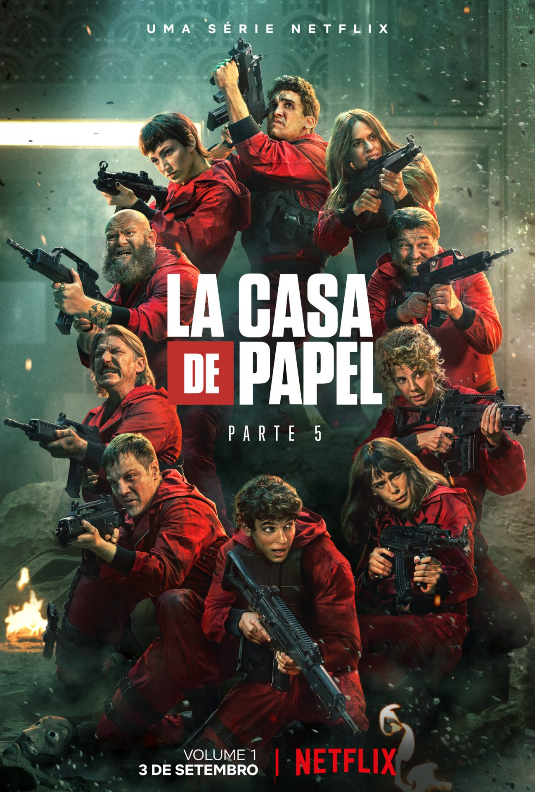
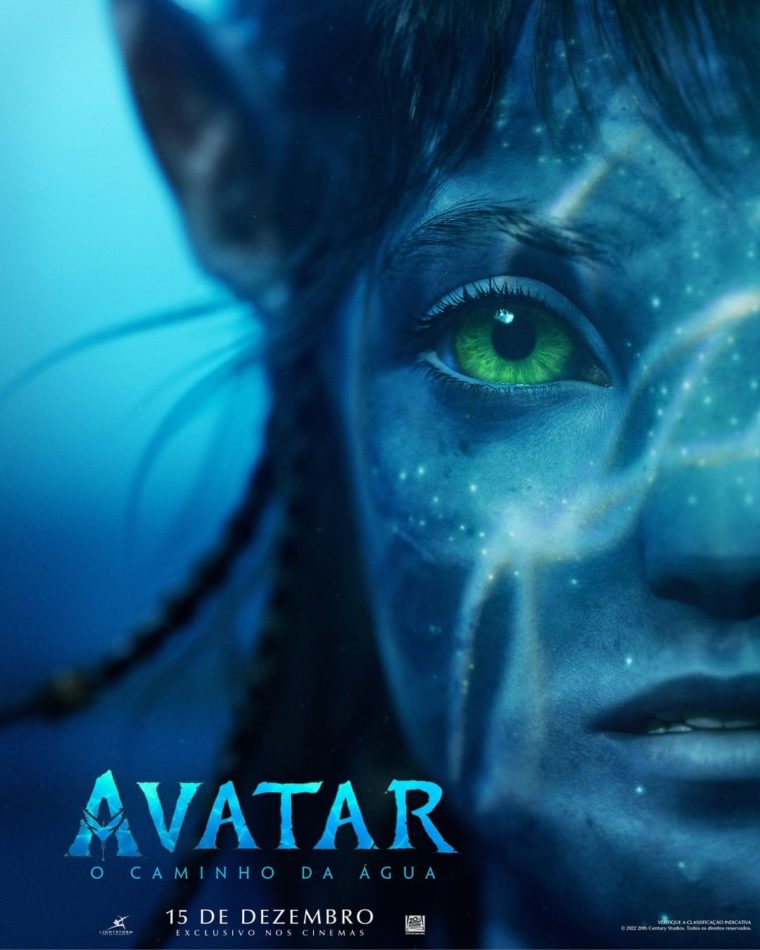

La casa de papel
Avatar
Até o Último Homem


La casa de papel é uma série de televisão de drama policial espanhola criada por Álex Pina. A trama traça dois assaltos muito preparados liderados por um homem conhecido como O Professor (Álvaro Morte), um na Casa da Moeda Real da Espanha e outro no Banco Central da Espanha.
No exuberante mundo alienígena de Pandora vivem os Na'vi, seres que parecem ser primitivos, mas são altamente evoluídos. Como o ambiente do planeta é tóxico, foram criados os avatares, corpos biológicos controlados pela mente humana que se movimentam livremente em Pandora. Jake Sully, um ex-fuzileiro naval paralítico, volta a andar através de um avatar e se apaixona por uma Na'vi. Esta paixão leva Jake a lutar pela sobrevivência de Pandora.
Acompanhe a história de Desmond T. Doss, um médico do exército americano que, durante a Segunda Guerra Mundial, se recusa a pegar em armas. Durante a Batalha de Okinawa ele trabalha na ala médica e salva cerca de 75 homens.